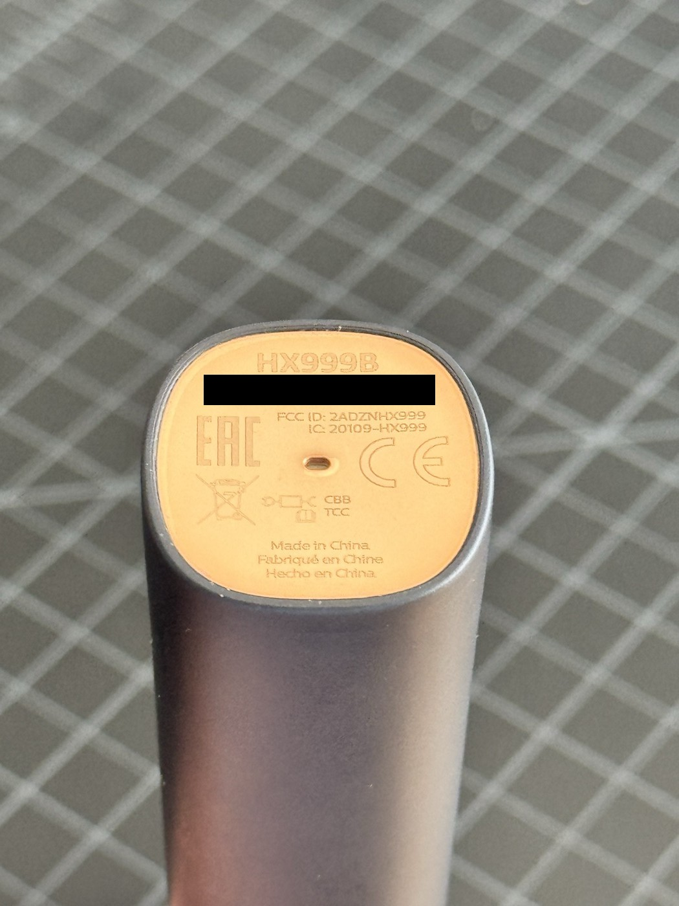
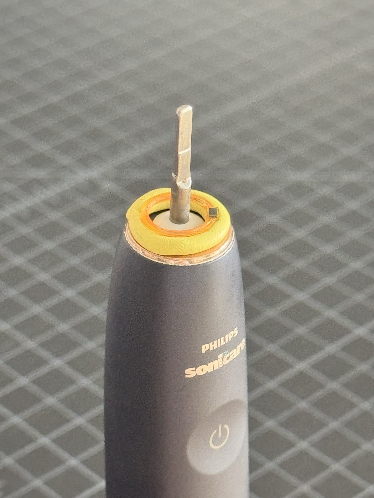
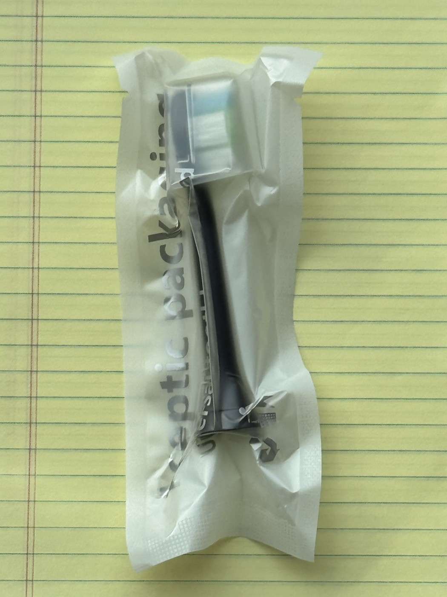
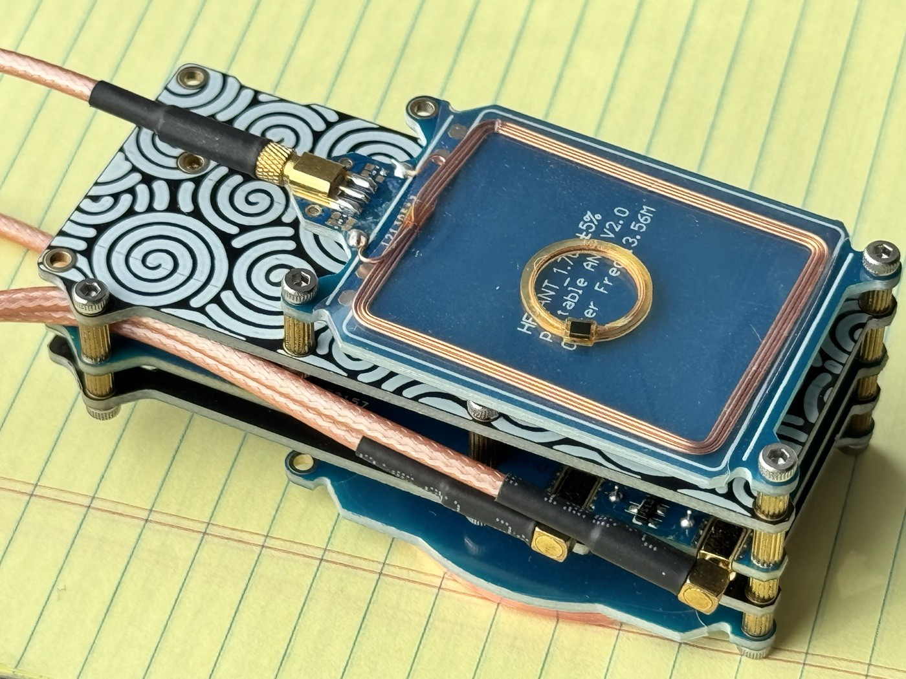
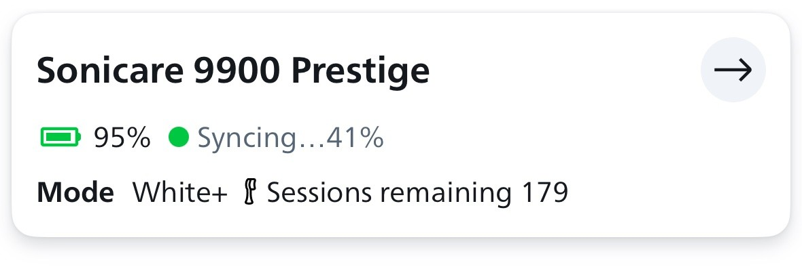
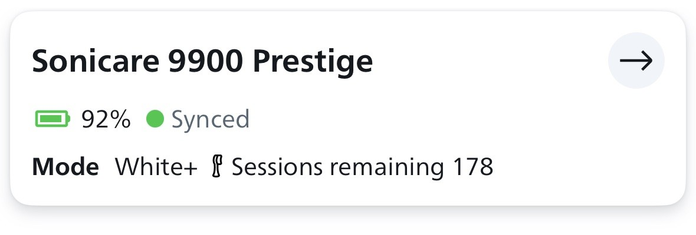

A replaceable toothbrush head is a surprisingly interesting embedded-system boundary. The bristles wear out, but a tiny passive NFC tag carries an electronic record of use. I wanted to know what that record actually contained: a session count, elapsed runtime, a fixed identifier, or something harder to interpret.
I extracted the tag from a Philips Premium White brush head, read it with a Proxmark3, and compared its memory before and after running the handle. Once a likely runtime field emerged, I made two controlled, authenticated edits and checked what happened when the tag went back to the toothbrush.
The short version: on this specimen, two bytes behave like a little-endian runtime accumulator. A reported 160-second run added exactly 160 ticks. Lowering that field persisted, and subsequent operation accumulated from the edited value. After zeroing it, I no longer observed the brush-head replacement light that had appeared with the high value. That is a change to recorded usage and observed warning behavior, not a factory reset or a reversal of physical wear.
the bench setup matters
The handle was a Philips Sonicare 9900 Prestige. Its base is marked
HX999B. The tag came from a Premium White
head. Only one tag and one handle were tested; handle firmware and app version were
not recorded.

For every handle trial, the extracted tag was held with putty around the bare handle's drive shaft. No brush head was attached. All motor runs used White+ mode. Runs shorter than the full 2-minute-40-second session were stopped by pressing the power button. These were unloaded bench runs, not toothbrushing trials.
This distinction changes what the experiment can establish. The readable record changed even with no bristles brushing teeth. In this setup, it tracks operation, not a direct measurement of bristle wear. It does not establish how pressure, load, or other modes might affect accounting during normal use.

another view of the comparison head

reading beyond the phone-facing URL
The Proxmark3 identified the chip as an NXP NTAG213C
(NT2H1311C1DTL), an ISO 14443-A NFC tag with a seven-byte UID.
Its GET_VERSION response was 00 04 04 02 01 01 0F 03.
The device uses four-byte pages, not a sector layout.

The capability container at page 0x03 was
E1 10 12 00, advertising 144 bytes of user memory at pages
0x04 through 0x27. The early pages contain an ordinary
NDEF URI record pointing to https://www.philips.com/nfcbrushheadtap.
The URI prefix comes from identifier 0x02; the record terminates
at page 0x0C.
The interesting state is farther along, outside that NDEF record but still inside user memory. Reading a URL with a phone is not equivalent to inspecting all of the tag's application data.
| Pages | Contents | Interpretation |
|---|---|---|
00-02 | UID, check bytes, internal and static-lock bytes | Tag identity and manufacturer area |
03-0C | Capability container and Philips URI | Standard NFC content |
0D-1E | Zero in the captures | No observed use |
1F-20 | 00 01 06 00, 00 00 01 02 | Undecoded application data |
21-23 | Printable data; specimen bytes redacted | Product/manufacturing-like data; exact meaning unverified |
24 | Changing bytes 0-1; bytes 2-3 also stored here | Likely runtime accumulator; neighboring bytes undecoded |
25-27 | Additional application state | Some bytes changed during trials; meanings unknown |
28-2C | Lock/configuration and credential areas | Not targeted by any write |
finding the runtime field
I saved a JSON and binary dump at each step and compared corresponding four-byte pages. The first seven captures, recorded in the September 30 research notes, preceded any reader-side write. The early runs were not all timed precisely; their filenames saying "cycle" should not be read as proof of a full session.
| Observation | Page 0x24 | Bytes 0-1 as little-endian | Delta |
|---|---|---|---|
| Initial capture | 92 58 02 01 | 22,674 | Baseline |
| After first run | 99 58 00 01 | 22,681 | +7 |
| Without motor operation | 99 58 00 01 | 22,681 | 0 |
| After next run | 99 58 00 01 | 22,681 | 0 |
| After subsequent run | A7 58 00 01 | 22,695 | +14 |
| After approximately 30 seconds | C5 58 00 01 | 22,725 | +30 |
| After approximately 60 seconds | 00 59 00 01 | 22,784 | +59 |
The carry is particularly informative: C5 58 becomes
00 59. Interpreted as little-endian values, that is
0x58C5 to 0x5900, a difference of 59.
Together with the +30 result and unchanged no-operation capture, this supports
a runtime accumulator whose ticks approximately correspond to seconds.
If that interpretation is correct, 22,784 represents 6 hours, 19 minutes,
and 44 seconds of recorded operation.
It is not enough to declare a complete 16-bit format. The first two bytes explain the observed values, but overflow behavior and the meaning of the neighboring bytes remain untested. The zero-delta run also shows why the presence of a run is not, by itself, evidence of a committed runtime update.
three numbering systems worth keeping separate
- Tag page:
0x24, or decimal36. - Tag-memory byte offsets:
0x90-0x91. - Offsets in these saved binary files:
0xC8-0xC9.
Each saved binary is 236 bytes: a 56-byte Proxmark3 metadata header followed
by 45 four-byte pages. The page offset is therefore 56 + 4 * page.
JSON block keys are decimal: blocks["36"] means page
0x24, not page 0x36. The exported
Counter0, Counter1, and Counter2 fields
stayed at zero and are not this application accumulator.
readable does not mean unprotected
The tag allowed unauthenticated reads, but its configuration reported protected
writes. Page 0x29 had AUTH0 = 0x10. At page
0x2A, ACCESS = 0x43 was decoded by the client as
PROT=0, CFGLCK=1, and AUTHLIM=3:
write protection, locked configuration, and an authentication-attempt limit.
The remaining failed-attempt budget was not established.
The local Proxmark3 source already contains a Philips-specific credential
generator, ul_ev1_pwdgenG, credited to
ATC1441's published implementation.
It uses CRC calculations over the UID and ten readable manufacturing-string
bytes. The client reads pages 0x21-0x23 and takes ten bytes
beginning at page 0x21, byte 2. The specimen's UID and manufacturing
bytes are withheld because they are inputs to that derivation.
This derivation is prior art, not a discovery from this investigation. I used only the Philips-specific candidate, verified it with an authenticated read, and then used that verified credential for the writes. No failed authentication or brute-force sequence was observed. Protection was not disabled; no password, PACK, or lock/configuration page was deliberately changed. The specimen's credential and identifying derivation inputs are omitted here.
A credential derived from readable fields is not a secret from an observer who knows the derivation. However, a successful authenticated write is not evidence that all heads have the same policy, or that arbitrary neighboring edits would be accepted. Silicon originality, write authorization, and integrity of a mutable usage record are different properties.
two controlled edits, not a whole-tag reset
On October 12, I reduced the accumulator by 60 ticks:
00 59 00 01 became C4 58 00 01, or
22,784 to 22,724. A write operates on a whole four-byte page, so the two
neighboring bytes were copied from a fresh backup rather than guessed.
Two independent unauthenticated readbacks, including a new reader session
after the RF field was turned off, confirmed persistence.
Only binary offsets 0xC8 and 0xC9 changed.
Every other displayed page and the metadata matched. Putting the tag back on
the handle without running the motor did not restore the old value; the dump
remained identical. I still observed the brush-head replacement icon/light.
A decrease of 60 ticks was not sufficient to remove that indication in this trial.
The next approximately 30-second run did not produce the predicted increment. It left the accumulator at 22,724 while changing associated state:
| Page | Before | After |
|---|---|---|
0x24 | C4 58 00 01 | C4 58 02 01 |
0x25 | 00 00 03 00 | 00 00 04 00 |
0x26 | BD A3 2D 00 | A0 DD 3E 00 |
A second approximately 30-second run then increased the accumulator by 30,
to E2 58 02 01 (22,754), with only its low byte changing.
Across the two runs, the observed total increase was 30, not approximately 60.
I did not precisely record the removal delays or capture RF traffic, so I
cannot distinguish a deferred write, removal timing, or another accounting rule.
I also cannot assign the +30 uniquely to the second run rather than deferred
accounting for the first.
On October 13, the second controlled write zeroed the accumulator:
E2 58 02 01 became 00 00 02 01.
The fresh neighboring bytes were now 02 01, not the earlier
00 01. Again, only the two accumulator bytes changed, and two
separate readbacks matched.
When I mounted the zeroed tag on the handle without running it, I no longer observed the replacement icon/light. The subsequent dump was identical to the zero confirmation: the handle had not visibly reinstated the old count. The warning observations were made directly at the handle, but were not recorded on video and the exact observation window was not measured.
This supports a relationship between the edited usage field and the observed replacement indication on this setup. It is not a complete causal isolation: neighboring state had changed between the earlier high-value observation and the zero-value trial, and the handle's internal state was not inspected. There was no high-low-high warning comparison and no measured warning threshold. The result should not be described as proving that these two bytes alone control every replacement warning.
does it keep counting after zero?
After a reported 30-second run, I left the tag on the upright handle until
its lights turned off. I observed no replacement warning at the end of that run.
The accumulator became 1D 00 02 01, or 29 ticks.
Only the low byte changed; all other displayed bytes and metadata were unchanged.
The 29-tick result is close to the reported 30 seconds, as the earlier 59-tick result was close to 60 seconds. These differences do not establish a particular rounding mechanism. Nor does lights-off establish the firmware's sleep state or prove that it is the commit point.
A fresh baseline confirmed 29 ticks. I then completed one full White+ session,
2 minutes 40 seconds, or 160 seconds. The next dump read
BD 00 02 01, or 189 ticks:
before: 1D 00 02 01 -> 29
after: BD 00 02 01 -> 189
delta: 160 ticksOnly file offset 0xC8 changed, from 1D to
BD. Bytes 02 01, every other displayed page, and
metadata remained identical. The exact +160 strengthens the seconds
interpretation and demonstrates continued accumulation from the edited baseline.
The duration was reported from the completed session, not independently instrumented.
what the app adds, and what it does not
The app showed 179 sessions remaining before the full run and 178 afterward. The baseline screenshot was still syncing at 41%; the post-run screen said Synced. Both showed White+ and Sonicare 9900 Prestige. The head detail screen showed Premium White and the same 178-session estimate.


One full session and one displayed-session decrement are consistent, but do not reveal the conversion formula. A physical motor run can update handle or app state as well as tag memory. No artificial-increment experiment with attachment and synchronization but no motor run was performed, so these screenshots do not isolate the accumulator as the app's sole input.
the experimental sequence at a glance
| Step | Page 0x24 | Ticks | Key observation |
|---|---|---|---|
| Pre-edit backup | 00 59 00 01 | 22,784 | Matches final read-only baseline |
| Reduce by 60; two confirmations | C4 58 00 01 | 22,724 | Only accumulator bytes changed |
| Attachment only | C4 58 00 01 | 22,724 | Whole dump unchanged; replacement light observed |
| First approximately 30-second run | C4 58 02 01 | 22,724 | No runtime increment; neighboring state changed |
| Second approximately 30-second run | E2 58 02 01 | 22,754 | +30; only accumulator low byte changed |
| Fresh pre-zero backup | E2 58 02 01 | 22,754 | Matches preceding capture |
| Zero; two confirmations | 00 00 02 01 | 0 | Only accumulator bytes changed |
| Attachment only | 00 00 02 01 | 0 | Whole dump unchanged; replacement light absent |
| Reported 30-second run; wait until lights-off | 1D 00 02 01 | 29 | +29; no end-of-run warning observed |
| Fresh full-session baseline | 1D 00 02 01 | 29 | Matches preceding capture |
| Reported full 160-second White+ session | BD 00 02 01 | 189 | Exact +160; app shows 178 remaining |
what remains unknown
- Commit timing. Some runs did not produce the expected increment. No RF trace establishes when or in what order the handle writes the pages.
- Neighboring fields. Page
0x24bytes 2-3 and pages0x25-0x27are not decoded. An event-related field, timestamp, checksum, or lifecycle flag is a hypothesis, not a finding. - Counter width and overflow. The observed values fit a two-byte accumulator; rollover and possible extensions were not tested.
- Replacement policy. The exact threshold, caching behavior, and all inputs to the warning remain unknown.
- Generality. The investigation covers one extracted Premium White tag and one HX999B handle in White+ mode, unloaded. No second tag, loaded head, other mode, or other handle establishes transferability.
- Long-term behavior. Persistence is demonstrated over the recorded interactions, not over months of normal operation.
The highest-value follow-ups would be an independently timed repeat and a recorded, controlled warning comparison. A second specimen would test whether the layout generalizes. None requires pretending that the unresolved short-run results did not happen.
a usage record is not physical wear
The most interesting result is not the app's countdown. It is the separation between a consumable's physical condition and its electronic history. In this bench setup, a passive tag continued to receive usage updates without any brush head attached. Its runtime field could be lowered through authenticated access, and subsequent updates started from that edited value rather than visibly restoring the old high count.
Zeroing was followed by disappearance of the observed replacement light. That supports a change in usage-related warning behavior on this specimen, not proof of a complete lifecycle reset or a universal BrushSync bypass. No bristles were restored, and no conclusion about cleaning effectiveness or safe head-replacement intervals follows from changing memory.
For an embedded developer, the lesson is methodological as much as architectural: compare complete captures, distinguish page addresses from file offsets, preserve undecoded bytes, separate persistent storage from device behavior, and keep the anomalous results. A few bytes can tell a useful story without telling the whole one.
tools, evidence, and references
Twenty saved JSON/binary capture pairs underpin this account. All twenty were checked for agreement between the binary page data and the JSON's 45 displayed pages during preparation of this draft. Write verification also compared the metadata and all displayed pages, not just the edited field. Password/PACK placeholders in unauthenticated dumps cannot verify their actual contents.
Reads used a USB-CDC Proxmark3 and the Iceman client. The recorded hardware
query reported PM3 GENERIC, an AT91SAM7S512 Rev A MCU, and client,
bootrom, and OS version Iceman/master/e6d7cd1-suspect, built
September 30, 2026. The recorded source-tree HEAD was
e6d7cd1f9d330b930073f32cda06e308774cd36d.
These identify the queried setup.
Relevant read and analysis commands were hf mfu info,
hf mfu dump, and hf mfu pwdgen -r. The latter
computes candidate credentials without authenticating or writing. The two
actual edits each used a verified credential and an ordinary four-byte write
to decimal page 36. Client and firmware write paths were inspected to distinguish
a single-page operation from a multi-page payload. This is an experimental
account, not a recommendation to alter replacement reminders: authentication
limits, locked configuration, and undecoded state make careless writes risky.
- NXP NTAG213/215/216 datasheet: background for page writes and access-control fields. A family reference, not independent confirmation of every NTAG213C detail.
- Proxmark3 NFC format notes: the NTAG213C layout is described as inferred from NTAG213.
- ATC1441's Philips credential derivation: existing work credited by Proxmark3.
- Proxmark3 credential generator, client commands, and firmware read/write paths: source references for credential inputs and operation scope.
Setup photographs are my own. App screenshots are from this investigation and have been cropped for relevance.